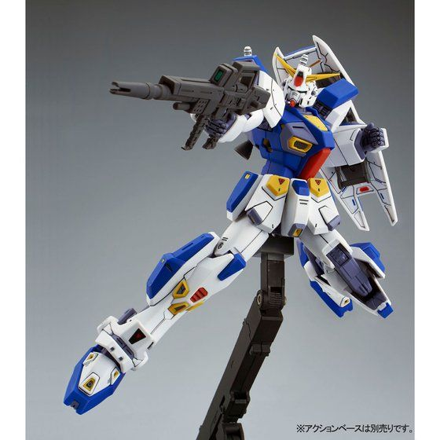

- Sơ lược
- Trang bị
- 60mm Vulcan Gun
- Beam Saber
- Beam Rifle
- Shield
- Hardpoint
- 8000 Series Neurocomputer
- Cốt truyện
- Mission Packs
Gundam F90 là một đơn vị nguyên mẫu được phát triển bởi Viện nghiên cứu hải quân chiến lược theo "Formula Project", một kế hoạch để tạo ra các bộ đồ di động nhỏ. Chỉ cao 14,8 mét so với RX-78-2 Gundam cao 18 mét, việc thu nhỏ kích thước của Gundam F90 đạt được thông qua việc sử dụng cấu trúc tổ ong siêu nhỏ lấy từ Yashima Heavy Industries, cho phép làm cho lớp giáp và khung di chuyển của nó nhẹ hơn. Gundam F90 cũng có một lò phản ứng thu nhỏ nhưng công suất của nó gấp 1,5 lần so với các MS hiện có. Với tổng cộng 51 bộ đẩy được đặt khắp thân, Gundam F90 cũng có khả năng di động và cơ động cao. Tổng cộng có ba đơn vị Gundam F90 được chế tạo và được gọi là Unit 1 , Unit 2 và Unit 3.
Đặc điểm nổi bật nhất của Gundam F90 là khả năng thích ứng với Mission Packs. Những trang bị tùy chọn chuyên dụng này có thể được gắn trên 11 điểm được đặt khắp thân của Gundam F90, cho phép MS này thực hiện nhiều nhiệm vụ khác nhau. Để điều khiển Mission Packs, các máy tính pseudo-personality ( giả nhân cách ) được cài đặt. Unit 1 có Type-A.R., Unit 2 có Type-C.A. và Unit 3 có Type-K.B. Vũ khí tiêu chuẩn của Gundam F90 bao gồm vulcan hai đầu trên đầu, một beam rifle, hai beam saber và một tấm khiên.
Những vũ khí bắn đạn pháo gắn trên đầu này có tốc độ bắn cao nhưng sức mạnh thấp và không hiệu quả trước các MS. Nhưng chúng có thể làm hỏng các khu vực được bọc thép nhẹ như cảm biến và rất lý tưởng để bắn hạ các mục tiêu nhỏ, bọc thép nhẹ như tên lửa hoặc xe nhỏ. Vào đầu giai đoạn thiết kế F90, người ta đề xuất rằng tất cả các thiết bị không cần thiết cho các hoạt động cơ bản như súng tích hợp, sẽ bị loại bỏ để giữ MS nhỏ, nhẹ và có khả năng cơ động cao. Tuy nhiên, sau đó, súng Vulcan vẫn được bổ sung cho mục đích tự vệ.
F90 có hai Beam Saber được lưu trữ trên backpack. Tùy thuộc vào Mission Pack, chúng có thể được di dời đến các phần khác của Mission Packs.
Một Beam Rifle chuyên dụng có sức mạnh lớn hơn so với các Beam Rifle tiêu chuẩn thời bấy giờ, nó sử dụng băng đạn thuộc hệ thống E-pack và ban đạn E-pack lắp vào phía sau Beam Rifle trở thành báng súng. Các E-pack dự phòng có thể được mang trên váy bên và bản thân Beam Rifle có thể được giữ ở váy sau.
Một tấm khiên được thiết kế riêng cho cỗ máy này. Có thể gắn trên cẳng tay trái, cầm tay hoặc cất trên Backpack. Khiên của Gundam F90 chắc chắn và nhẹ do sử dụng vật liệu mới, có thể cất hai E-pack dự phòng ở mặt sau.
Gundam F90 có 11 Hardpoint để gắn Mission Packs để trang bị Missionpacks đáp ứng các nhu cầu cụ thể hoặc tình huống chiến đấu. Vị trí của các Hardpoint này là: hai trên cùng của giáp vai, một trên backpack, hai ở hai bên cẳng tay, hai trên giáp váy trước, hai trên giáp váy bên và hai ở hai bên chân. Các hardpoint này được che lại khi không sử dụng. Các Mission Pack đi kèm có thể được thay đổi, khiến Gundam F90 trở nên cực kỳ linh hoạt. Có khoảng 26 Mission Pack. Các hardpoint cũng có thể được sử dụng để gắn các E-pack dự phòng của Beam Rifle hoặc các vũ khí tầm xa khác.
Máy tính Non-Von Neumann thế hệ thứ năm là máy tính điều khiển chính của F90. Nó được lắp đặt do nhu cầu về một hệ thống máy tính mạnh mẽ để điều khiển một cỗ máy hiệu suất cao. Bên cạnh việc điều khiển bộ đồ di động, nó cũng có thể điều khiển tất cả các Missionpack. Có 3 loại được trang bị trên 3 Gundam F90. Được cài đặt trên Unit 1 là Type-A.R Pseudo-Personality Computer, nó không chỉ hỗ trợ kiểm soát Mission Packs mà còn có thể dự đoán chuyển động của kẻ thù. Mặc dù chưa bao giờ được xác nhận, nhưng có thể chương trình của nó dựa trên Amuro Ray.
Sau cuộc chiến Neo Zeon, một thời kỳ hòa bình tạm thời đã bắt đầu cho Earth Sphere, mà không có bất kỳ cuộc nổi loạn Spacenoid lớn nào. Tuy nhiên, Earth Federation Forces đã quyết định duy trì sức mạnh quân sự của mình bằng cách tạo ra các MS mới hơn, được thiết kế cho thời đại mới này. Mặc dù Anaheim Electronics đã độc quyền trong nhiều thập kỷ khi nói đến sản xuất Mobile Suit, EFF đã tạo ra nhóm chuyên gia phát triển nội bộ của riêng mình, được gọi là Viện nghiên cứu hải quân chiến lược (SNRI). Tổ chức này được giao nhiệm vụ tạo ra các MS thu nhỏ mới, không chỉ nhỏ hơn và nhẹ hơn mà còn được trang bị vũ khí và công nghệ mới nhất để đối phó với các tình huống và nhiệm vụ chiến đấu khác nhau. SNRI tiến hành dự án "Formula Project", tạo ra F90 Gundam F90.